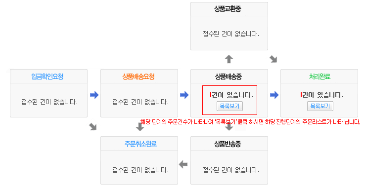
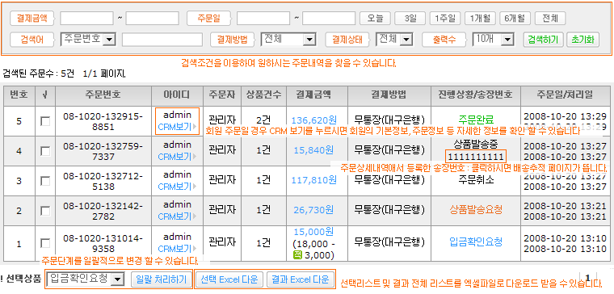

01. 주문처리현황
아래처럼 각 단계별로 전체 주문상황을 한눈에 볼 수 있습니다.

02. 주문리스트
주문전체 리스트를 확인 하거나 원하시는 주문 리스트를 검색 할 수 있습니다.
주문번호를 클릭 하시면 주문상세내역을 보실 수 있습니다.

03. 주문단계안내
A. 입금확인요청 : 무통장으로 주문 신청하면 입금확인요청상태가 됩니다. 입금은행에 입금여부를 확인 하시고 입금이 되었을 경우 상품발송요청으로 단계를 변경 하시면 됩니다.
B. 상품배송요청 : 무통장 입금확인이 되었거나 전자결제(카드, 핸드폰, 계좌이체 등)가 성공적으로 이루어 졌을 경우 상품발송요청 상태가 됩니다. 주문상품을 배송할 준비를 하시면 됩니다.
C. 상품배송중 : 주문상품을 택배회사에 넘겨 배송을 시작해 상품발송중인 상태입니다. 주문상세내역에서 택배회사와 송장번호를 입력 하시면 고객이 주문/배송조회에서 송장번호를 이용해 배송추적을 할 수 있습니다.
D. 배송완료 : 주문 고객이 수령확인하여 처리완료된 상태입니다. 배송완료 후 고객이 수령확인을 하지 않았거나 거부의사(반품,교환)를 밝히지 않았을 경우 상품발송 후 7일후 자동으로 처리완료로 됩니다.
E. 상품교환중 : 고객이 상품교환을 요청해서 상품교환중인 상태 입니다. 교환이 완료되면 처리완료로 단계를 변경 하시면 됩니다.
F. 상품반품중 : 고객이 상품반품을 요청해서 상품반품중인 상태 입니다. 반품이 완료되면 주문취소로 단계를 변경 하시면 됩니다.
G. 주문취소 : 고객이 입금확인요청 상태에서 주문취소를 하였거나 입금확인 후 1:1고객문의나 고객콜센터를 통하여 주문을 취소한 상태 입니다.
04. 주문상세내역
A. 주문상품정보 : 고객이 주문한 상품을 확인 할 수있습니다. 옵션과 할인률이 적용된 상품일 경우 선택 옵션과 할인률이 나타 납니다.
B. 결제정보 : 주문번호, 주문시간, 사용한 적립금, 배송비, 총결제금액, 결제방법, 입금은행, 입금자, 입금자 예정일, 결제정보 등을 확인 할 수 있습니다.
C. 주문자/배송지 정보 : 주문고객 성명, 주문고객 연락처 ,주문고객 이메일, 수취인 성명, 수취인 연락처, 배송지 주소, 남기신 말씀을 확인 할 수 있습니다.
D. 관리자메모/진행상황처리 :
택배회사를 선택 하시고 운송장 번호를 입력 하시면 됩니다. 관리자메모
05. 관리자메모/진행상황처리
A. 배송정보 : 택배회사를 선택 하시고 운송장 번호를 입력 하시면 됩니다. 입력된 정보는 고객이 주문/배송조회에서 배송추적을 하는데 이용 됩니다.
B. 관리자메모 : 주문고객과 상담한 내용, 특의사항, 변경, 추가 사항을 적어 놓으시면 편하게 관리하실 수 있습니다.
C. 진행상황 처리 : 진행상황(단계)를 선택 하시면 됩니다. 주문취소 리스트에서 주문상세내역을 보실 경우만 주문삭제가 나타나며 주문을 삭제 할 수 있습니다.
06. 취소/반품/교환내역
취소/반품/교환 중인 주문상품 리스트를 확인 하실 수 있습니다.
07. 취소/반품/교환 접수리스트
취소/반품/교환 요청 상태인 주문상품 리스트를 확인 하실 수 있습니다.
확인 후 취소 처리시 취소/반품/교환 접수리스트에는 나타나지 않습니다.
08. 횐불접수리스트
환불접수된 주문건을 조회하고 환불처리를 할 수 있습니다.